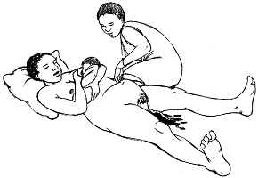

{% extends "templates.jinja/base.page-with-navbar.html" %}
{% block title %} Hesperian - Pregnancy & Birth{% endblock %}
{% block id %}Bleeding_After_Placenta{% endblock %}
{% block content %}
Cómo tratar el sangrado después de que salga la placenta

- Pídale a la madre que orine. Una vejiga llena
previene que el útero se contraiga.
- Mantenga a la madre recostada y coloque al bebé al pecho de la madre para que amamante. Si el bebé no puede mamar, sobe los pezones de la madre. Esto ayudará a que el útero se contraiga y empuje la placenta fuera.
- Frote firmemente la parte superior del vientre al nivel del ombligo hasta que la matriz se ponga duro. Siga frotando hasta que el sangrado se detenga.
- Déle medicina para detener el sangrado. Inyéctele 10 unidades de oxitocina en la nalga o muslo. En vez de esto, puede darle 400 microgramos de misoprostol por la boca, 1 vez nada más. En vez de lo anterior, puede darle 0,2 miligramos de ergometrina por la boca o por medio de una inyección en la nalga o muslo.
Una mujer que está sangrando mucho está en peligro de entrar en choque. Revísela para ver si presenta señas de estar en choque.
{% endblock %}
{% block footer %}
{% endblock %}